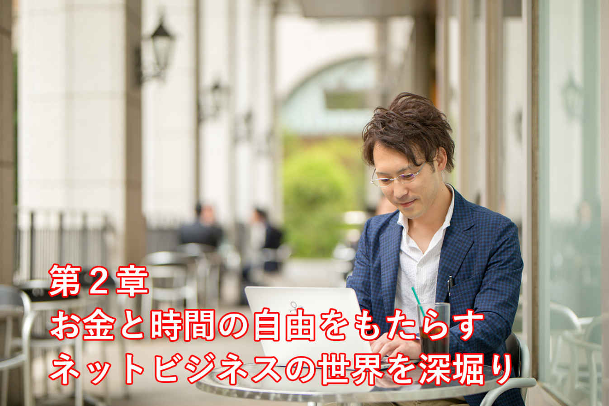
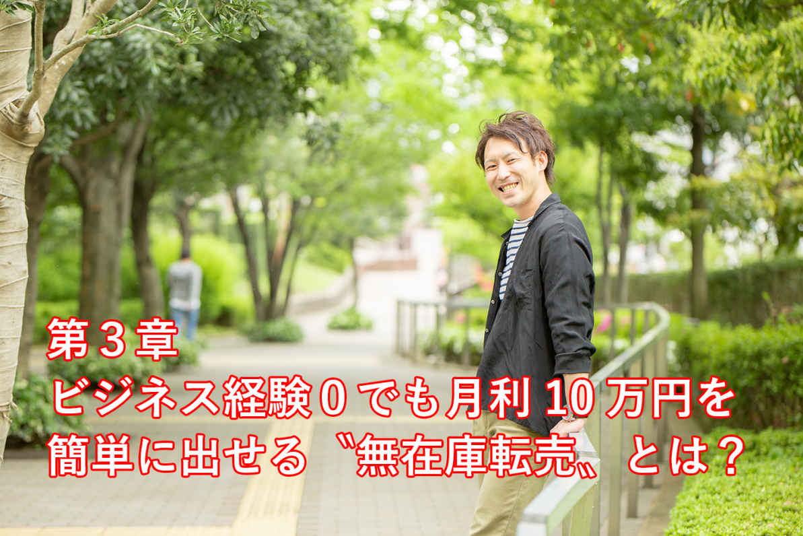
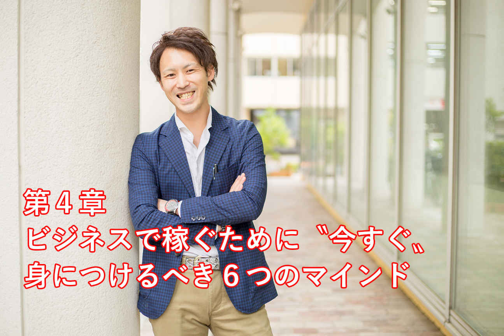

| 超ブラック企業の社畜が１年で脱サラできた「たった１つの方法」 | |
| 石神たくや | |
| Hitotsuku Publication (2018) | |
石神たくや
はじめまして。石神たくやです。この度は本書を手に取っていただき、誠にありがとうございます。
本書に興味を持っていただいたあなたはきっと、仕事やプライベートについて、何か「悩み」を抱えているのではないでしょうか？ それは、どんなに些細なことでも構いません。
「毎日仕事ばっかりで、自分の時間が全くない......」「休みの日も、仕事に備えて身体の疲れをとるだけで、何もできていない......」「どれだけ働いても、お給料が全然上がらない......」そんなことを考える瞬間が、日常の中であるのではないでしょうか？
近年、日本では、「働き方改革」を掲げ、私たちの働き方の見直しが図られています。安い賃金で長時間労働を課し、違法労働とパワハラを生み出す、いわゆる「ブラック労働」が、問題視されている中、国をあげてその対策が進められているのです。
その「働き方改革」のおかげで、働き方が改善された人も多くいることでしょう。しかし、まだまだ多くの人が、苦しい環境で労働を強いられているのが現実です......。
何事も、浸透するまでは時間がかかるものです。しかし、それを待てるだけの忍耐力とやる気で、あなたは今の仕事を、これからもずっと続けられますか？ 働き方が変わるのが先か、自分の身体が限界になるのが先か、そんな状態になってまで仕事をするのが、果たして良いことなのでしょうか？
さて、前置きが長くなりましたが、ここで少し私の話をさせてください。
私は現在31
歳で、北海道の田舎から東京に上京して、ネット物販スクールの講師として、コミュニティの運営事業に携わっています。ビジネスを人に教えながら、自由な場所で自分の好きなことをして、とても明るい人生を送っています。
こんなゆとりある生活をしている私ですが、実は１年前までは、あなたと同じサラリーマン生活を送っていました。しかも私は、若くして多額の借金を抱えていた、もうどうしようもない人間でした......。
飲食業の仕事をしていた私は、辛い環境で長時間働き、休みの日もほとんどなく、おまけにお給料も安い、世間で言う「ブラック労働」をずっと続けていました。しかもそのお金のほとんどは、借金の返済に充てられていたので、自由な時間もお金も全然ありませんでした。
仕事以外で動くのも、自宅と勤務先の通勤だけで、安らぐ時間は一切なく、「自由」とは無縁のサラリーマン生活でした。こんな生活を、私は７年も続けていたのです。正直、今思い出してみても、「この頃はすごくきつかったな......」とブルーになります（笑）。
しかし、こんな夢も希望もない、将来の不安が募っていくばかりだった私でも、たった１年で人生を変えることができました！ 人生のどん底にいた私が、今では脱サラをして、時間とお金が自由な生活を送っているのです。
「え！ 何があったの？」と大層に思われるかもしれませんが、決して大きな出来事があったわけではありません。どうしてこんなに変われたのか、それはずばり「勇気を出して一歩踏み出した」からなのです！
言うだけなら簡単ですが、実際に「一歩踏み出す」のは、なかなか容易ではありません。なぜなら、行動できずに悩んでいる人が、世の中にはたくさんいるからです。
しかし私は、一歩踏み出してみて、「働き方が変わるのを待っていても、自分の生活は絶対に変わらない！」と、感じることができました。その気持ちに背中を押され、私は脱サラを決断したのです。その結果、今のように、自由な場所で、好きなビジネスができる生活を手に入れました。
私は、本書を通してあなたに、「勇気を出して一歩踏み出すことの大切さ」をお伝えしたいと、強く思っています！ ブラック企業で働いていて、借金のブラックリストにも載っていたＷブラックな私でも、人生逆転して変わることができました。だから、あなたなら絶対に大丈夫です！
私は、脱サラして、サラリーマンのお給料の何倍もの収入を、安定して得られる方法があると、何よりあなたに知っていただきたいです。その事実を知った上で、行動していくことにより、あなたを取り巻く環境が大きく変わっていくと、そう信じています。
本書では、なぜネットビジネスを始めたのか、ネットビジネスとは何か、どのように実践するのか、今からあなたがすべきことは何かを、私の実体験を交えて、お伝えさせていただきます！
本書が、あなたの「一歩踏み出す勇気」を後押しできる存在になりましたら、何より幸いです。
では、これから、なぜビジネスをやるべきなのか
をあなたにお伝えしていきます。ですがその前に、私がどんなサラリーマン生活を送っていたのかを、まずは知っていただこうと思います。
はじめにも少しお話ししましたが、もともと私は、飲食業の仕事をしていました。そもそも飲食業は、平日も休日もあまり関係ない仕事になります。平日は仕事で、土日が休みという決まりは一切ないので、私は曜日感覚もなく日々の業務をこなしていました。
そのため、夜遅くまで働くことも、休日返上でお店に出ることも、飲食業ではよくあることでした。実際、私の生活は、毎日18
時間以上の労働、休日は月に１、２回あるかないかの大変な状態だったと、今でもすごく覚えています。
また私は若いときに、お金を借り続ける生活をしていたので、多額の借金を抱えていました。そのため会社のお給料は、最低限の生活費以外は、全部借金の返済に充てられていたのでした。
当時は、かなりキツキツの生活だったので、満足なお金を持つことすら、私にはできていませんでした。その上、クレジットカード会社のブラックリストに名前が載るくらい、悲惨な生活を送っていました。
そんな世界で働いていると、自分の時間も何も、私にはありませんでした。休みの日でも、仕事のことばかり考えて、身体が休まりませんし、余暇を楽しむこともできません。だからサラリーマンの生活は、全く明るいものではなかったです。
でも当時の私は、「この生活が当たり前なんだ」
と考えており、辛くて苦しくても、ただただ耐えることしかできませんでした......。借金は別にしても、周りの同僚は同じように働いていましたし、友人も、業種が違っても、みんな自分と同じように会社で働いていました。だから、「自分の時間と労力をフルに使って働くことが、社会で生きていくためには当たり前で、そんなことで弱音を吐く自分がいけないんだ」
と、ずっと考えていたのでした。
でもある日、ふと、「こんな生活を、死ぬまで続けなければいけないのか......」と考えたことがありました。今でも鮮明に覚えているのですが、そのとき背筋が凍るくらい自分が自分にゾッとしたのです。
それから私は、「自分の人生はこんなはずじゃない！」と、思うようになっていったのでした。
そんな辛くて苦しい生活をどうにかしたい、と考えた当時の私は、すき間時間でもできることを探し始めました。でも、ビジネスの経験もなければ、飲食業以外の仕事を詳しく知らない私には、その術を探すことさえも大変でした。何かきっかけがあれば、そのきっかけをもとに、お金を稼ぐ方法を調べることもできたかもしれません。でも、そんなきっかけすら私にはなかったのです......。
だから私は、ネットや YouTube の動画を片っ端から観て、お金を稼ぐ方法を探していきました。いろいろな情報が得られる今の時代、一体自分には何が良いのか、
最初はそれも全く分かりませんでした。
しかし探し続けていると、「自分でもできそうだ！」と感じられるビジネスに、私は出会うことができたのでした。それがネットビジネスであり、特にその中でも「ネット物販」
だったのです！
ネットビジネスのメリットについては、また第２章で詳しくお伝えしていきますが、すき間時間の作業で、誰でも結果を出せるところに、何より私は魅力を感じました。
でも、いきなりネット物販ビジネスだけで生計を立てていくことは、さすがに私にはできません。だから、まずは副業としてネット物販を始めてみることにし、２０１６年の10
月に、ネット物販が学べるコミュニティに入ることにしたのでした。
コミュニティに入った私は、本業である飲食業の仕事をしながら、少しでも時間ができれば、物販に触れていくようにしていきました。忙しくて大変でも、「それが自分の未来を変える！」と信じて、まずは１ヶ月間取り組んでみました。
すると、すき間時間の作業でも、初月で８万円の利益
を出すことができたのです！ 本業とは別のことで８万円も稼げたことが、当時の私にはすごく衝撃的でした。そして「これは本気で取り組めば稼げる！」そう感じられるようになれたのでした。
しかしこのとき、私のビジネスを阻害する出来事が待っていました。本業である飲食店の仕事が、非常に忙しくなってしまったのです......。
飲食業は、年末になるとすごく仕事が大変になります。忘年会や飲み会が増えるので、お店で働いている側からすると、すごくハードで、時間なんてあったものではないのです。だから私は、開始２ヶ月でネット物販を辞めてしまうことになりました。
本業に時間と労力を注ぎ過ぎた私は、その疲れとモチベーションの低下から、副業する気をなくしてしまいました。ネット物販をもう一度やろうと、以前ほど思えなくなっていたのでした。しかし、そんな私を救ってくれたある転機が、その後すぐに訪れたのです。
それは、入っていたコミュニティのセミナーに足を運んだときのことです。私は、そんなに高い意識を持たずに、そのセミナーに参加をしていました。正直「少しでも気分転換になれば良いな」くらいの気持ちでした。
でも、そのセミナーで登壇された講師の方が、自分の人生との向き合い方、ビジネスに取り組む意識、モチベーションの向上への考え方を、熱くお話ししてくださいました。その言葉が、どれも私の心に突き刺さり、落ちていた気持ちを高めてくれたのです。
セミナーをきっかけに、もう一度心に火をつけることができた私は、再びネット物販に取り組むようになれました。そして、２０１７年の４月には、なんと月48
万円の利益
を出すことができ、翌月の５月には、晴れて脱サラを叶えることができたのでした。
この自分自身の経験をもって、私はあなたに、「自分の人生と真剣に向き合うことをしてほしい！」
と、まずはお伝えしたいです。自分のことを全く考えずに生きている人なんていないとは思いますが、しっかり真剣に向き合えている人は数少ないと、私は感じています。
例えば、自分の性格、経歴、考え方、価値観、今の仕事に取り組む姿勢、周りの人間関係、何十年先までの将来設計を、全てはっきり堂々と、あなたは言うことができますか？
私も最初は、なんとなく生きていた人間だったので、自分の人生どころか、身近な物事さえもしっかり向き合えていませんでした。その結果が、ブラックな環境で７年間働くことを生んだのだと、今では感じています。
でも、自分の人生と一度真剣に向き合うことで、本当の自分は何者で、何を求めているのか
が分かるようになれるのです！ これは、その場しのぎで生きる状態を続けている人には、絶対に気付くことができません。
私も今なら、「ブラックな環境で働くことはおかしい！」と、言うことができています。しかし、自分に染み付いている「当たり前」を、「当たり前じゃない」と考えられるようになるまでに、思い返せばすごく時間がかかりました。それだけサラリーマンの仕事が、自分の人生を形作っていた面があったかと、今はむなしくなるくらいです（笑）。
だからあなたも、「今の人生を変えたい！」
と、少しでも思うのであれば、すぐに自分の人生と向き合うようにしてください！
「今は忙しいから」「今は考えなくても大丈夫だから」と先延ばしにしていても、厳しいですが何も変わりません。そう先延ばしにすることであなたは、さらに自分自身の首を絞めることにもなるのです。
まずは簡単にできることからでも、少しチャレンジしてみてください。１日の予定を書き出してみたり、生活ルーティーンを思い返してみたり、自分の働き方を客観的に見てみたり......どんなことから始めても良いのです。そうやって、少しずつ自分の〝今〟を受け入れられることで、自分の人生と真剣に向き合えるのですからね。
自分の現実を受け入れて、「このままではいけないんじゃないか？」と思えても、一歩を踏み出すのには、まだ躊躇をしてしまうものです。「変わりたいけど、これで大丈夫かな......」「周りとは違うことをやるのって、やっぱり良くないんじゃないのかな......」と、不安な気持ちになる人はたくさんいます。
もともと人間は、本能的に変化を嫌う生き物です。だから、自分に染みついた常識や、すでに完成された環境から離れるのは、誰もが恐怖を抱いてしまうのです。変化がない方が、気は楽ですし、居心地も良いので、誰だって苦しくなることを自ら進んでやろうとは思わないでしょう。
また、出る杭は打たれる
ということわざがあるように、周りと違うことをすれば、他の人からも色眼鏡で見られます。そういった周りの目を気にすることから引き起こされる恐怖心も、変化を恐れる要因になっていると考えられます。
ですが私は、「変わることは決して悪いことではない！」
とあなたにお伝えしたいです。なぜなら、変わるリスクを恐れて、自分が変わらないことで、さらに大きなリスクを生んでしまうからなのです。
例えばあなたが、以前の私のように「今の仕事がブラックで大変だ」と感じていたとします。そのときに「こんな現状を変えたいけど、それは甘えだから変えてはいけないんだ」と、変わらずに何十年も働き続けていたら、あなたはどうなるでしょうか？ 絶対身体が持たないですよね。最悪の場合、過労で倒れて、うつ病になって、心身ともに弱ってしまう状態になることもあり得るでしょう......。
この世で、自分自身の身体より大事なものはありません。そんな自分の身体を酷使し続けなければならない仕事があるなら、その仕事から離れるという生活の変化を、考えるべきなのです。
変化のリスクを恐れて、現状維持で働き続けることは、さらなるリスクを生んでしまいます。だから変わることは、決して悪いことではないのです。
変わるためにはお金と時間の不安、今の生活がなくなる恐怖もあるかもしれません。ですが、不安や恐怖のことを考えても、ネガティブなことしか生まれません。つまりネガティブなことをずっと考えていても、人生は全く変わらないのです。
だったらその時間で、もっとポジティブになれることを考えた方が良い、と私は思います。私もポジティブに考えらえるようになったことで、「変わるためには自分でビジネスを始めるべきなんだ！」
と気付くことができました。そしてそれがきっかけで、今の自分があるのです。
あなたも、「変わること＝悪い」とネガティブ思考にならず、ポジティブ思考で考えられるように、意識をしてみてください。そして、そのポジティブ思考の先にある、「自分が変わるためにすべきことは何か？」に、ぜひ気付いていっていただきたいです。
そんな将来を手に入れるためにも、今この瞬間から、どんどん変わっていきましょう！
以上が第１章になります。私がなぜビジネスを始めたのか、どうして人生を変えられたのかを、あなたにも知っていただけたことでしょう。
次の第２章では、ネットビジネスは一体何なのか、あなたにお伝えしていきます。

ここからは、私の人生を変えたネットビジネスとはどんなものなのかを、お伝えしていきます。
ただその前に、そもそもなぜ働くのか？
を少し考えてみてください。当然、働いてお金を稼がないと、人は生きていけません。ですが、そのお金を稼ぐ方法について、まずはあなたに考えていただきたいのです。
今の時代は、職業選択の自由があります。自分がどんな仕事をして、どんな働き方でお金を稼いでいくのかを決めることができます。例えば同じ業種でも、会社に勤めて働く人もいれば、フリーランスで働く人もいます。会社の仕事の１つを切り取っても、また細かく業務は分かれているものですが、それだけ幅広い選択肢が、今の時代にはあるのです。
この働き方につながる考えで、おもしろい話があります。それは『金持ち父さん 貧乏父さん』という本の中で語られていることなのですが、「ＥＳＢＩ」で表される４つのお金の稼ぎ方についての話です。
今の世の中では、お金の稼ぎ方として、４つの方法があると言われています。その４つとは、
・Ｅ＝会社員（Employee）
・Ｓ＝自営業（Self employee）
・Ｂ＝ビジネスオーナー（Business owner）
・Ｉ＝投資家（Investor）
になります。
どんな仕事をしている人でも、この４つのうちどれかに属しています。イメージしやすくするために、ここでは飲食店で考えてみましょう。
会社員は、飲食店で働く従業員のことです。お店に雇われて、接客や調理の仕事をすることで、決められたお給料をもらいます。このように会社や組織に属して、働くことで収入を得られている人が「Ｅ」に当たります。
自営業は、その飲食店の店長のことです。自分でお店を始めて、自分の力で働くことにより収入を作っていきます。このように自分の店を持って、収入を得ている人が「Ｓ」に当たります。
ビジネスオーナーは、お店が行っている飲食ビジネス自体を経営している人です。人やお金を管理し、飲食ビジネスが成り立つように経営をして、収入を生み出していきます。このように経営側でビジネスを管理して、収入を得ている人が「Ｂ」に当たります。
投資家は、その飲食ビジネスが儲かることに期待して、お金を出資している人のことです。ビジネスにお金を投資して、そのビジネスが利益を出していくことで、収入が生まれます。このように、お金を元手にして収入を得ている人が「Ｉ」に当たります。
職業は４つとも同じ「飲食業」ですが、収入を得る方法が全然違うことが、お分かりいただけるでしょう。もちろん飲食業以外の業界でも、この４つは同じです。
さて、なぜこの稼ぎ方の話を引き合いに出したかと言いますと、自分はこの４つのうちどこに属しているのか？
をあなたに考えていただきたかったからです。おそらく「Ｅ」の会社員に当てはまるのではないでしょうか？
事実、この４つのお金の稼ぎ方のうち、日本人のほとんどの人が会社員に属しています。あなたの周りにいる人で考えてみても、会社員の人が圧倒的に多いでしょう。
ですがこの「会社員」は、４つの中で一番お金と時間の自由が少ない稼ぎ方になるのです。端的に言ってしまえば、安い賃金で会社に雇われて、時間と場所の自由を縛られて、会社の仕事が中心の人生になる、
それが会社員なのです。
お金と時間の自由な生活を実現するためには、少なくとも会社員以外の３つの働き方を考えなければなりません。この「ＥＳＢＩ」の話をもって、会社員でお金を稼いでいても、絶対に自由な生活を手に入れることはできないと、そうあなたに強く伝えたかったのです！
自由な生活を実現するためには、会社員に属している状況から、一刻も早く抜け出さなければなりません。そのためにも、自分で何かビジネスを始める必要が出てくるのです。
その始めていくビジネスとして、私が一番におすすめしたいのは、この章のテーマでもある「ネットビジネス」です。「いろいろなビジネスがあるのに、なぜネットビジネスなの？」と、疑問に思われることでしょう。ですので次に、ネットビジネスをおすすめする理由をお伝えしていきます。
そもそも「ビジネス」と一括りに言っても、現代にはリアルビジネス
とネットビジネス
があります。
リアルビジネスとは、実際に街中でお店を構えて、お客さんと近い距離間でサービスの提供していくビジネスのことです。例えば飲食店なら、街中にお店を構えて、料理や食事の空間をサービスとしてお客さんに提供していますね。街の景色を作っているほとんどのビジネスは、このリアルビジネスになるのです。
一方ネットビジネスとは、ネット上で取引が完結するビジネスになります。例えば、ネットで物を売る「ネット物販」もネットビジネスですし、最近流行りの YouTube や仮想通貨、アフィリエイト、ＦＸもネットビジネスです。リアルビジネスに比べると、馴染みの程度は低いでしょうが、このようにネット上でも幅広いビジネスがあるのです。
こうしたリアルビジネスとネットビジネスを比べたとき、ビジネスの経験がない人でも始めやすいのはどちらだと、あなたは思いますか？
答えを言ってしまいますが、断然ネットビジネスなのです！
リアルビジネスで何かやろうと思ったら、ビジネスをやる場所、膨大な初期費用、お客さんに提供するサービス内容、市場調査など考えなければならないことが、たくさん出てきます。だから、仮にビジネスの経験がない人が、いきなり「飲食店を始めてください」と言われても、現実的に不可能な話です。
しかしネットビジネスでは、それらを考える必要がなく、ビジネスを始めることができます。パソコンとネット環境さえあれば、場所はどこでも良いですし、ネット上でビジネスを行うので、膨大な初期費用も要りません。
またネットビジネスは、形としてすでに出来上がっているビジネスが多いです。そのためリアルビジネスのように、自分で最初のサービスを考えなくても済むのです。
これから先、情報技術の発展で、さらにネットが身近になってくることが予想されています。このように、ビジネスの経験がない人にも始めやすいメリットももちろんありますが、これからの時代を考えても、ネットビジネスは将来性が高いビジネスになります。だからこそこのネットビジネスは、これから必須の稼ぎ方になってくるのです。
ネットビジネスがなぜ良いのかをお分かりいただけたところで、もう１つ考えるべきことがあります。それは、「ネットビジネスの中でも、どのようなビジネスを選択するべきか？」です。
これまでにも少し出てきていましたが、ネットビジネスと言っても、多くのビジネスがあります。そしてその中には、最初に選ぶべきではないビジネスも、実はあるのです。それは何かと言いますと、専門的な知識やスキルが必要になるビジネス
です。
例えばネットビジネスの中でも YouTube は、コンテンツを作れるクリエイトスキルや、人を惹きつけるスピーキングスキルが必要になります。仮想通貨やＦＸも、専門的な投資知識や、リサーチスキルがなければ稼ぐことはできません。そしてアフィリエイトも、商品を人に紹介できるだけの営業スキルやライティングスキルが、稼ぐためには必要不可欠になってくるのです。
このように、初心者が始めるに当たって、専門的な知識やスキルがないと稼げないビジネス
が、ネットビジネスには多くあります。だから、何も分からない段階の人が、最初に手を出すべきではないのです。
そこでおすすめなのが、私も取り組んでいる「ネット物販ビジネス」
です！
ネット物販ビジネスは、既存のネットショップで売れている商品を売るだけなので、難しいことを覚える必要が一切ありません。また、もともと人が集まっているところで、もともと売れている商品を扱うので、集客や営業もしなくて大丈夫です。
また近年は、ネットショップの数も増えて、ネットで買い物をする人も増えてきています。そのため、誰もが参加しやすいビジネスになっているのです。だから、どんな人でも利用できるように、ショップサイトの仕組みも分かりやすくなって、無料でアカウントを作れるショップサイトもあります。つまり、ビジネスの入口が広く、取り組む上でもすごくハードルが低いのです。
さらにこのネット物販ビジネスは、これから先も廃れないビジネスモデルでもあります。当たり前ですが、生活をしていて、買い物をしない人なんて１人もいませんよね？ 買い物という行為がなくならない限りは、物販ビジネスもなくならないのです。普通に考えれば、買い物をしなくなる世界は絶対にありえませんからね（笑）。ですので、需要があり続けて廃れないビジネス、それがこのネット物販ビジネスなのです。
最初の選択を間違えてしまうと、その後のビジネスも大きく変わってしまうので、あなたも気を付けて考えてみてください。
これまでのお話の通り、ネット物販は、初心者が始めるにはうってつけのビジネスになります。しかし、「自分がやってもちゃんと結果が出せるの？」「ビジネスだからリスクもあるんじゃないの？」と、疑問が残るところもあるでしょう。
でも、ご安心ください！ このネット物販ビジネスは、経歴やスキルが一切関係なく、誰がやっても結果を出せる「再現性が高いビジネス」
です。だから、ビジネスをやる人を選ぶことは全くないのです。
例えばあなたが、すごく喉が渇いていて、冷たい水が欲しかったとします。そんなときに、目の前で冷たい飲料水が売られていたら、もちろん買いますよね？
あなたにとっては、喉を潤すために飲料水を買った、それで終わりでしょう。どこの誰が出品者で、誰が水を冷やしていたかなんて考えもしないと思います。
ネット物販も、実はこれと同じことなのです。商品を買うお客さんは、その商品が欲しいから買うのであって、誰が売っていても問題にはなりません。だから、たとえ出品者が私でも、あなたでも、誰もが知っている超有名人でも、誰が売っても売れるものは売れます。つまり、人に関係なく、誰でも同じ結果を出すことができるのです。
ネット物販ビジネスは問題ありませんが、世の中には、その人と同じことをやっても、結果が出せないことが多く存在しています。例えば一般人が、今からイチローと同じトレーニングメニューで、同じルーティーンで生活しても、世紀の大記録を作ることはできませんよね？ むしろ一般人は、その生活で身体がもたないかもしれません......。
当たり前ですが、イチローのフィジカルがあるからあれだけの記録が作れるのであって、一般人が同じ生活をしたからと言って、イチローになれるわけがありません。つまり、そのイチローの生活には、「再現性がない」
のです。
ビジネスも、やるなら「再現性が高いビジネス」
をやっていかなければ、意味はありません。そしてその上で、短期間で結果を出せてかつ、ノーリスクなやり方を見つけてやっていくことが求められるのです。
少しフライングになりますが、ネット物販ビジネスには、そんな短期間に結果を出せて、ノーリスクで稼げる方法が、実は存在します（笑）。その方法に関しては、次の第３章で解説していくので、その前提となる再現性の高さがネット物販にはある
と、ここではぜひ知っておいていただきたいです。
私も飲食業しか知らない人間で、資格や技能は何もありませんでしたが、ネット物販を始めてたった数ヶ月で人生を変えることができました。今では１日３時間程度の作業で、サラリーマンの頃の何倍ものお金を稼ぐこともできています。
何もなかった私でも、こんなに人生を変えられる、それだけの衝撃がネット物販にはあるのです。だからあなたもぜひ、ネット物販を始めて、人生を大きく変えていってください！
以上が第２章になります。ここまでお話ししたことを考えながら、あまり不安になりすぎず、ビジネスを始めることを考えていただけたらと思います。
第３章では、ネット物販ビジネスをどのように実践していけば良いのかを、あなたにお伝えしていきます。

ここからは、ネット物販の実践方法についてお伝えしていきます。
具体的な話に入る前にまずは、ネット物販はどのように行われているのかを、購入者、販売者の目線から考えて、流れを確認していきましょう。
そもそもネット物販とは、文字通りネットで物を販売していくビジネスです。ネット上にあるショップで商品を販売し、その売り上げが利益になる非常にシンプルなビジネスモデルになります。日本では、Ａｍａｚｏｎや楽天市場といったネットショップが有名ですよね。
まずは、購入者目線からネット物販を考えてみましょう。
仮に今あなたが、ヘッドフォンを欲しかったとします。そしたらあなたは、各ネットショップで「ヘッドフォン」と検索して、商品画像、商品説明、価格を見て比較し、自分が気に入ったヘッドフォンが見つかれば注文しますよね。そして支払い手続きを済ませて、商品が手元に来たら取引が完了になります。これが購入者目線のネット物販です。
次に販売者目線でネット物販を考えてみます。
例えばあなたが、自分のネットショップを持っていたら、まずは商品を仕入れなければなりません。今回は分かりやすく、ヘッドフォンを仕入れることにしましょう。
まずは、ヘッドフォンをメーカーに注文して、仕入れ金を払って仕入れをします。次に、そのヘッドフォンの画像と商品説明、利益が出る価格を考えて、ネットショップに出品していきます。そして、そのヘッドフォンが売れたら、検品、梱包をして、お客さんの元へ発送をしますね。最後に、無事にお客さんが商品を受け取ったら、取引が完了になります。これが販売者目線のネット物販です。
この流れから分かるように、ネットショッピングでは、商品自体に実際に触れてみて判断することができないので、画像、説明文、価格だけが、購入者の判断材料になります。だから購入者は、普通に実店舗でショッピングするときよりも、慎重に商品を選ぶようになるのです。あなたもネットで何か買うときは、普段よりも商品の情報を確認するかと思います。
販売者も、仕入れた商品が売れないと損をするだけですし、不良品を売ってもトラブルにつながるだけなので、慎重に商品を売ることになります。だから、画像、説明文、価格、検品、梱包、発送には、特に注意を払うものです。
ネット物販ビジネスにおいてあなたは、これからこの販売者側に立ってビジネスを行うことになります。だからいつもの購入者目線とはまた違った目線を、持たなければないのです。購入者目線、販売者目線それぞれのネット物販の流れは、この後でも非常に重要になってくるので、ぜひ覚えておいてくださいね。
さて、先ほどのような流れで行われるネット物販なのですが、ここでは〝リスク〟について、ちょっと考えていきたいです。あなたがネット物販をやるとなったら、販売者側に立ちますが、どのようなところに〝リスク〟があると、思いますか？ 少し考えてみてください。
いかがでしょうか？
細かなことを言えばきりはありませんが、ネット物販には、特に大きいと言われているリスクが、実は３つもあるのです。その３つとは、「最初の資金」「売れ残り」「売れた後の作業」
です。
まず、最初の資金とは、売る商品を仕入れるときに必要なお金のことです。ネット物販ビジネスは、商品をたくさん売ることで利益を上げていくビジネスです。だから当然ですが、商品がないとビジネスは始まりません。しかし、最初にお金がないと商品を仕入れられませんし、仮に仕入れられたとしても、安い商品、手持ちの少ない商品しか売ることはできません。ですので、最初の資金がないと、スタートラインに立つこともできないのです。
次に、売れ残りとは、文字通り商品が売れずに残ることです。頑張って商品を仕入れて、ショップに出品してみても、全然売れないケースは、実は多くあります。当然、売れないとその商品は、不良在庫になり、仕入れ分が赤字になります。また、売れるまで自分で保管をしておかなければなりません。そのためお金と商品の管理が、非常に大変になるのです。
最後の売れた後の作業とは、検品、梱包、発送のことです。これも当たり前ですが、商品が売れても、その商品が不良品では、お客さんに送ることはできません。だから、不良品でないかを検品して、輸送のときに壊れないように梱包しなければならないのです。加えて発送のときには、郵便局や宅急便の窓口まで商品を持って行かなければなりません。つまり、行動面での縛りがかなりあるのです。
このように、売れた後の作業を総括すると、時間と手間がかかっていることが分かります。この煩わしさは、商品が売れれば売れるほどキツくなって、あなたのビジネスを圧迫していくのです。
でもここで、「なんだよ！ ネット物販全然ダメじゃないか！」なんて、どうか思わないでください（笑）。実は、これら３つのリスクを、全て解消してくれるネット物販の方法があるのです！ その方法こそが、ずばりタイトルにもある〝無在庫転売〟です！
無在庫転売は、在庫を持たずに商品を売っていくネット物販の手法になります。「在庫を持たない？ どういうこと？」と思われるかもしれませんが、仕組みは非常に簡単です。
まずは、利益が出せそうな商品の画像と説明文を用意します。そうしましたら、その商品の情報を、自分のショップに出して、利益が出せる価格で出品をします。そしてその商品が売れたら、仕入れサイトから商品の注文をして、そのままお客さん直送するようにするのです。以上、これで無在庫転売の取引は完了です。
先ほどのネットショッピングの流れを思い出していただきたいのですが、この無在庫転売は、販売者目線で考えたときにあった、仕入れの順番が変わっています。先ほどは、「仕入れてから売る」だったのが、今回は「売れてから仕入れる」の順番になっているのです。
当然ですが、売れてから仕入れるので、最初の資金がなくても大丈夫ですし、売れることが分かっているので、売れ残りになることもありません。また直接お客さんに発送をするため、自分で検品、梱包、発送の作業も済むのです。
このように無在庫転売は、先ほど挙げたネット物販の大きなリスクを、全て解消できています。しかもこれが、先ほどの購入者目線での流れが全く変わっていないのに、成立しているのです。
また無在庫転売は、キャッシュフローが良いところも、無在庫転売の強みだと私は考えています。
一般的に、ビジネスで20
万円の利益を出そうと思ったら、元金だけで１００万円は必要だと言われています。しかも、その１００万円を元手にして稼いでも、20
万円が自分の手元に来るまでは、長期的な時間を見越しておかなければなりません。そんなまとまった大金はもちろん、長い時間待つことなんて、普通の人なら絶対にできませんよね......。
でも無在庫転売なら、仕入れがないので、少額からでも十分ビジネスを始めることができます。その上、売れば売るほど利益になるので、20
万円という大きな数字であっても、短期間で容易に稼ぐことができるのです。
しかも稼いだお金も、早ければ数日、遅くても２週間以内には自分の手元に入ってきます。ですので、このキャッシュフローの良さも、無在庫転売のメリットなのです。
この無在庫転売は、難しいノウハウは一切なく、誰でも無理なく実践できる方法になります。最初はぜひ、この無在庫転売にチャレンジしてみてください！
そんな無在庫転売なのですが、始めるに当たって準備をしなければならないことが２つあります。でも、そんなに大層な物ではないので、ご安心ください。
その２つとは、使用するサイトのアカウント登録
と使用枠があるクレジットカードの準備
です。
前節の説明でもありましたように無在庫転売では、自分のネットショップがなければ、せっかく良い商品を見つけても売ることができません。また、商品の仕入れも、仕入れサイトに利用登録をしておかないと、仕入れが不便にもなります。
加えて無在庫転売では、数多くの商品を売っていくので、仕入れのときにクレジットカードがないと、取引がスムーズに行えなくなります。それゆえにまずは、使用するサイトに個人情報を登録することと、使用枠に余裕があるクレジットカードの準備が必要になるのです。
無在庫転売で使うサイトは、主にフリマアプリとオークションサイトになります。あなたも一度は見かけたことがあるかもしれませんが、メルカリ、ラクマ、ヤフオク、モバオク
が代表的です。
このうち、フリマアプリは、無料で始められますが、オークションサイトは利用料がかかります。ですので、登録の際には注意をするようにしてください。また、このときに、自分の銀行口座やクレジットカードの登録も済ませておくと、売上金の入金や商品購入をスムーズに行えるので、ご自身の名義のものを準備しておくことをおすすめします。
そして商品の仕入れサイトは、Amazon や楽天市場などの大手ネットショップを使っていきます。もちろんアカウントがなくても利用はできますが、仕入れる量が多くなると、アカウントを持っていた方が、長い目で見てもお得で便利です。なのでこちらも、最初に登録しておきます。
ちなみに最初は、作業に慣れるためにも、無料のフリマアプリでショップを作り、仕入れがしやすい Amazon で無在庫転売をやっていくことを、私はおすすめします。いくつも販路を持って、それぞれで無在庫転売をするのも良いですが、初心者がいきなりやっていくには、かなりハードルが高いと思いますので......。
さて、ここまでご説明したサイトの登録とクレジットカードの準備ができれば、ようやく無在庫転売のスタートです。
無在庫転売でやることは、商品のリサーチ、ショップへの出品、購入者への発送
とシンプルなので、その３つを順に解説していきます。ここでは、分かりやすいようにメルカリとＡｍａｚｏｎを使った例で、説明をさせていただきます。
例えば、メルカリでヘッドフォンがすごく人気で、数時間にいくつも売れている種類をあなたが見つけたとします。「自分も同じように出品したら売れるんじゃないか？」と、もちろん思いますよね。
そしたら次に、Amazon にもそれと同じヘッドフォンがないかと、探していきます。うまく同じ商品が見つけられたら、メルカリでの売れ筋価格と Amazon での販売価格を比べます。そのとき、メルカリの価格より Amazon の価格が安ければ、その商品は見事に無在庫転売に使えるのです。差額の目安は、３００円以上で検討してみるのが、最初は良いでしょう。
商品が見つかれば次は、自分のショップに出品していきます。出品には、商品の画像と説明文が必要になりますが、売れているページの写真と文章をコピーすれば良いので、ここでは考える必要はありません。価格も同様に、売れているページに合わせて出品をしていけば大丈夫です。出品ができたら、後は売れるのを待つだけです。
うまく商品が売れたら最後に、購入者へ商品を発送します。まずは Amazon の商品ページを開き、商品の購入手続き画面まで進みます。そのときに、発送先住所の入力がありますので、メルカリの取引ページに表示されている、購入者の住所を入力していきます。そして、クレジットカードで支払いを済ませ、商品の注文を確定させます。後は、購入者が商品を受け取れば作業は終了です。
いかがでしょうか？ 難しい操作は１つもありませんよね。
今回はメルカリと Amazon を例に挙げて、説明をさせていただきましたが、どの販路でも、基本的にやるべき作業は同じです。まずは取引を重ねて、これらの作業に慣れていくこと、これが大切になるのです。
無在庫転売は、非常にシンプルな転売方法になるので、やり方さえ分かれば、後は行動をしていくだけです。在庫がないからこそ、たくさん出品して、たくさん売っていく、
要するに〝数〟が物を言うようになるのです。そのためには、「とにかく即断即決」
で行動することが大切になってきます。
そもそもビジネスの売上とは、「単価」×「数量」
で決まっていきます。つまり、利益を上げていくためには、商品の単価を上げるか、販売する数量を上げるかを、考えなければなりません。
無在庫転売では、販路によって商品の価値がすでに決まっているので、単価を上げることは、正直厳しい面があります。ですので、販売する数量を上げていくことが、必要になっていきます。
また無在庫転売で商品を売るためには、取引の実績が非常に重要になります。
実は、自分のネットショップで売り買いの取引をすると、取引相手を評価するシステムが、どのサイトにもあります。仮にあなたが購入者だとしたとき、同じ商品を売っているセラーでも、良い評価が多いセラーと悪い評価が多いセラーだったら、どちらで買いたいと思うでしょうか？ 当然前者ですよね。
つまり、無在庫転売で稼いでいくためには、良い評価を着実に溜めなければならないのです。
さらにそんな評価を考慮した上で、もっと利益を上げるためには、複数のショップで商品を売ることが必要不可欠になります。１つのアカウントでやっていることを、２つ、４つ、８つ......と増やしてやっていければ、その分利益も大きくなります。つまり、複数のショップアカウントを運用することで、さらにビジネスの規模を拡大できるのです。
このように「無在庫転売でしっかり稼ごう！」と考えると、それに伴いやるべき作業の量も増えていきます。だから、即断即決で動き、効率良く作業をこなしていくことが大切になるのです。
これは無在庫転売に限らずどんなビジネスでも言えるのですが、稼ぐためのノウハウは日々変化していきます。
私が最初に学んだ無在庫転売のノウハウは、今とは全く違うものでしたし、実際今では、そのやり方で全く稼げなくなっています。つまり、今は通用するノウハウも、いつかは稼げなくなってしまうのです。
そのためにも、稼げるうちにしっかり取り組んでおく、いつまでできるか分からないからこそ今すぐ始める、
これこそが無在庫転売で稼ぐ極意だと、私は考えています。あなたも、迷っているならすぐに、ぜひ今から行動していってください！
以上が第３章になります。ネット物販の中でもノーリスクな手法である、無在庫転売をどのようにやっていけば良いのか、お分かりいただけたことでしょう。
第４章では、そんな無在庫転売はもちろん、これからのビジネスで稼いでいくために身につけるべきマインドについて、あなたにお伝えしていきます。

ここからは、自分のビジネスでしっかり稼ぎ続けるために、今すぐに身につけたいマインドのお話をさせていただきます。
ビジネスに限らず何においても、取り組むマインドは大変重要です。そのマインドを、確固たるものとして自分の中に築くためにも、これからお伝えする６つのことを、ぜひ意識するようにしてください！
まず１つ目は、「自分の可能性に自信を持つ」
ことです。
あなたは「自分に自信がありますか？」と聞かれたとき、胸を張って「自信あります！」と答えられますか？
正直、多くの日本人が、「自信がない」と答えます。それは実に、日本人の70
％
以上がそうだとも言われています。まあ実際、自分に自信を持つのは難しいですよね......。
でもこれはいけないことではありません。仕方のないことなのです。
そもそも日本では、学校教育のシステム上、少しでも周りから外れれば正されて、足並みそろえて、みんなと同じように進んでいくよう教育されます。そのため、周りとは違う自分の自信につながる要因を、排除されていきます。要は、個性を潰されて人は成長していくのです。だから、「自分に自信がない」と思ってしまう人が多いのは、仕方がないのです。
しかし、自分に自信があるかないかで、その後の結果を大きく左右します。なぜなら、その自分の思考は、良いことも悪いことも、それらは現実となって表れてしまうからなのです。
例えば１つの仕事でも、「自分にはこんな仕事、絶対にできっこないよ......」と自信なさげにやっていても、絶対に成功することはできません。それは、できない前提で取り組んでいるため、仕事ができた姿を、自分自身が信じられていないことが原因です。
だから、「この仕事は、自分になら絶対にできる！」と自信を持って仕事をやると、自信がない状態よりも確実にクオリティの高い結果を生み出すことができます。たとえ完全完璧ではなくても、自信がない人より、自信がある人の方が圧倒的な結果を上げることができるのです。
つまり、プラスの結果とは、プラスな思考がもたらしてくれているのです。実際、成功者と呼ばれる人たちは、みんな自分に自信を持っています。ですので、自分に自信を持ち、最初は根拠がなくても「できる！」と強く信じて取り組むことが、何より重要になるのです。
この「自分に自信をつける」ためには、周りの人に自分の思っていることを宣言するのが良いと、私は思います。たとえ今は自信がなくても、最初はハッタリの自信でも、周りに宣言して意識をしながら取り組むことで、あなたのマインドは大きく変わるのです。
私も最初は、周りに宣言してみることから始めました。そして自信がついていくにつれて、ビジネスも成功していくようになったのでした。
でも、私自身も後から気付きましたが、これは必然のことでもあります。なぜならそもそも自信とは、成功してから身につくのではなく、成功までの過程で得られる副産物だからです。
だからまずは、完全ではなくても良いので、自分に自信を持つように意識して、行動をしていってください。そこには、周りの目や恥をかく恐怖といったマイナスな感情は、一切必要ありません。
そして、そのプラスな感情が、あなたの可能性を守ってくれるのです。今のあなたはもちろん、これから先の可能性を潰さないためにも、少しずつ自信をつけていってください。
２つ目は、「稼ぎたい理由をしっかり自分自身が理解する」
ことです。
普段、会社で働いているときには、あまりじっくり考えることはないかもしれませんが、お金を稼ぐ理由が明確でないと、ビジネスはうまくいきません。
当然、「自分の力でお金を稼いでいきたい！」と、ビジネスを始めた人なら誰もが思うことです。しかし、「なぜあなたはお金を稼ぎたいのですか？」と聞いたとき、はっきりと答えられない人が多くいます......。
そもそものビジネスを考え始めたきっかけは、人それぞれにあるものです。自分自身のため、家族のため、将来のため、大切にしている物のため......何か理由がないと、人は「ビジネスを始めよう！」と、意識を向けていくことにはならないでしょう。
しかしその原因を、どこまで具体的に自分自身は理解できているかを考えてみてください。自分の生活のためだとしても、「自分はどんな物を食べて、どんな服を着て、どんなものを買って生活をしたいのか？」までを具体的に、明確にできている人は、ほとんどいません。つまり、漠然とした稼ぎたい気持ちだけがあって、その先のことまで考えが及んでいる人が、実に少ないのです。
この稼ぎたい理由は、これからビジネスに取り組んでいく自分自身のモチベーションにもなります。だから、この動機付けができると、行動も大きく変わっていくのです。
ビジネスをやっていると、大変なことも少なからず出てきます。そんなときに、その根本となる目的ができておらず、何もない状態だと、その大変さに心が折れてしまうときが、すぐに来てしまいます。そうなると、そのままビジネスを諦めてしまうことにもつながりかねません。
だから、自分の現状や理想をしっかりと見つめ直して、稼ぎたい理由を細かいところまで落とし込んで考えることが、大切になるのです。そこまで考えた上で、ビジネスを始めていき、その理由をモチベーションにして前進していくことを、意識していくようにしてください。
３つ目は、「自分で稼げる環境を作る」
ことです。
この稼げる環境とは、正しい情報と正しいノウハウをしっかり体得しながら、ビジネスに取り組める環境
のことです。
第３章のところでもありましたように、ビジネスで稼ぎ続けるためには、常に最新情報を取り入れていかなければなりません。過去に手に入れた情報でも使えるものはたくさんありますが、時代の変化とともにノウハウは変化していきます。だから、最新の情報をちゃんと整理して、自分の知識を常に更新していかなければならないのです。
そのためには、独学で取り組まず、「人から教わることができる環境」が、絶対に必要になります。
ビジネスはもちろん、勉強やスポーツでも、自分が分からないことを一から学んでいくためには、「人から教わる」
ことからがスタートになります。でも、独学で学んで、自分１人で何でもやろうとする人が 現実には多くいます。これが非常に危険なのです。
ネット物販ビジネスも、最初のうちは、自分で解決できることはあるかもしれません。でも、進んでいくうちに、「リサーチはこれで大丈夫なのかな......」「お客さんとのやり取りはこれで問題ないのかな......」と分からなくなることが、どうしても出てきます。だから、人から、つまりは成功者から教わる
ことが、躓かないためにも重要になるのです。
教えてもらえる人がいることで、自分を正しい方向へ導いてもらえます。また、仲間がいることで、お互いに切磋琢磨し合えて、モチベーションもアップしていきます。そんな環境に身を置くことで、自分のビジネスをよりプラスに考えていくことができ、おのずと稼げるようになる体質が出来上がっていくのです。
自分で稼げる環境に飛び込んで、稼げる環境を作っていくことをあなたも疎かにせずやるようにしてください。そうやって環境を変えて、あなたの中に「学ぶことへの価値」を感じられるようになれば、自然とその環境が、居心地の良いものになっていきますからね。
４つ目は、「自己流でビジネスをやらない」
ことです。
前節でお話ししたことにも共通するのですが、ビジネスは、まず人から学ぶことが基本になります。稼いでいる人から稼いでいる方法を学び、正しい型にはめながらやることが、自分自身が体得する一番の近道になるのです。
どんなことでも、やり方や要領を掴んでくると、自分では意識していなくても、やりやすいように自己流を取り入れてしまいます。でも、それを自分で許してしまうのはいけないのです。
私もこれまでに、多くの方にビジネスを教えて、サポートをしてきましたが、この自己流を取り入れてしまうことこそが、稼げない結果を作ってしまっていると、強く感じます。実際、「全然稼げないんです......」と相談に来る人が、どんなことをしていたのかを調べてみると、全員が自己流を入れてしまい、型から外れていたのです。
ネット物販は、再現性が高いビジネスモデルなので、ちゃんとした型に当てはめて、行動していけば稼げない結果になってしまうことは、まずありません。だから、うまくいかない原因は明白で、「そもそも求められたところまでやれていない」か「やり方が間違っている」かしかないのです。そのような状態を作っているのが、自分で勝手に判断して、取り入れてしまう「自己流」なのです。
そもそも「学ぶ」は、「真似る」と語源が同じだと言われています。だから、「学ぶこと＝真似をすること」
なのです。ゆえにまずは、うまくいっている人の真似をして、そこから自分にあった方法を見出していくこと、これが大事になります。
間違ったことにどれだけ時間と労力を使っても、あなたが望む結果を生み出すことはできません。そうならないためにも、自己流は捨てて、正しいやり方を知り、そして正しい努力を続ける意識をして、ビジネスに取り組んでいってください。
５つ目は、「どんなことにもへこたれずに前進する」
ことです。
よくビジネスを学び始めの人に多いのですが、「これが分かったら次のことをやろう」「ここまで出来たら次に行こう」と考えて、なかなか前進できない人がいます。
でも「じゃあそれはいつになったらできるの？」と聞いたら、「今はまだ......」と答える人がほとんどです。これでは、いつになってもビジネスは発展していきませんし、稼げるようにもなりません。
もちろん、取り返しのつかないことを引き起こさないために、慎重に判断し行動するのは大事です。しかし、その慎重さが邪魔をして、前へ進んでいけなければ、全く意味がないのです。
そうならないためにも、行動するときの思考を変えていかなければいけません。
例えば、何か新しいことに出会ったとき人は、まずそのことを〝知って〟、中身を〝覚えて〟、問題がないかを〝考えて〟、やってみようと〝行動する〟ものです。順番に言えば、「知覚考動」になります。でもビジネスで稼いでいくためには、この順番ではいけないのです。
何か新しいことに出会ったら、まずそのことを〝知って〟、中身を〝覚えて〟、とりあえず〝行動して〟、いけないところがあれば〝考えて〟改善する、としていくのが、ベストな思考になります。つまりは、「知覚動考」の順番で進んでいかなければいけないのです。
自分でまずはやってみないと、それが正しいのか間違っているのかさえも分からないですよね。何も分からないのにいろいろ考えていても、見出せるものはありません。
だから、考える前に行動する、行動してうまくいかなかったら修正してまた行動する「トライ＆
エラー」の意識が、前進していくためには必要不可欠になるのです。いつもと同じことを続けていても、今も何も変えることはできません。ですので、アプローチの仕方から意識して変えることが、稼ぎ続けるためには重要なのです。
この「トライ＆
エラー」の気持ちがあれば、必ずあなたは前進し続けることができます。ぜひ身につけていくようにしてください。
６つ目は、「人とビジネスを管理する〝オーナー思考〟を身につける」
ことです。
この〝オーナー思考〟とは、第２章にありました「ＥＳＢＩ」の「Ｂ」に当たるビジネスオーナーのような思考を持つことを言います。つまり、自分がそのビジネスのオーナーになり、人を雇って仕事を動かしていく意識を身につけることが重要になるのです。
この世の中にあるどんな仕事もそうですが、「人が動く」ことで、ビジネスが成り立っています。会社でイメージすると分かりやすいですが、現場で動く社員がいて、その人を管理する管理職の人がいて、その会社のビジネス自体を管理している社長がいます。これは見方を変えれば、管理するオーナーがいて、そのオーナーに雇われているからこそ、仕事が回り、会社としても成り立っていると考えることができますね。
あなたも自分のビジネスを始めれば、ビジネスオーナーになります。そうなったとき、いつまでも自分１人で作業をして、ビジネスを続けていてはいけないのです。
例えばネット物販ビジネスで考えてみても、商品のリサーチ、ショップへの出品、購入者への発送作業とやるべき作業は多くあります。ですがそれらの作業は、自分じゃなければできない作業ではありません。誰がやっても同じ作業を、自分じゃない人に任せて外注化していく意識が、ビジネスの発展には重要になってくるのです。
もちろん自分でやった方が手間はないかもしれません。しかし、増え続ける作業をいつまでも自分１人でやっていては、お金の自由は手に入っても、時間の自由を手に入れることはできません。だから、人に報酬を払って作業を外注化して、自分の時間の自由を手に入れていくシステムを作ることが、自由な生活を実現するためにも、絶対に必要なのです。
外注化に当たっては、信頼できる人を作り、自分のスキルを教えて仕事を任せていくための、「人を教育するマインド」
が、非常に大事になってきます。そのためにも、自分がビジネスを身につける段階から、〝オーナー思考〟を持って取り組むことが、重要になるのです。
人を集めて、人を教育して、外注化を実現する、これらは、マインドがしっかりしていない人には、なかなか簡単ではありません。しかし、ビジネスを組織化し、自分の時間を増やしていくことで、不労収入を実現していけるのも事実です。そんな未来を手に入れるためにも、先を見据えたビジネスで、自分のやるべきことに取り組む〝オーナー思考〟を、ぜひ今から意識していってください！ その強いマインドは、絶対にあなたを裏切りませんからね。
最後まで読んでいただき、誠にありがとうございました。
私がビジネスを始めて、人生を変えることができたこの喜びを、知っていただきましたことを、大変うれしく感じています。
本書の中でもお話しさせていただきましたが、人生を変えるためには、自分のマインドや思考が非常に大切であると、私は常日頃から考えています。
人間は、自分が想像できることは現実でも行うことができ、想像できないことを行うのは不可能だと、昔からよく言われています。「思考は現実化する」という言葉があるように、自分で考えることは現実になっていくのです。
もしあなたが、時間とお金に縛られた今の生活が当たり前なのだと思い、その世界しか想像できないのであれば、これから先のあなたの未来も、そんな不自由な生活が待っていることでしょう。
しかし、時間とお金に縛られない自由な生活を、自分も手に入れたいと思い、自由な生活を送っている自分が想像できれば、それは現実のものになっていきます。つまり、あなたが望めば、あなたの未来は必ず明るくなっていくのです。
殻を破るのは、すごく勇気がいることです。でも私も、今のあなたと同じように、仕事に悩み、お金に悩み、自分の人生に悩んだ人間です。その苦しさを知っているからこそ、私はあなたの勇気に全力で答えたいのです！
あなたの人生を変える環境があることを、ぜひ知っていただきたいので、まずは私のＬＩＮＥ＠
にご登録お願いいたします。
本書を通して生まれたこのご縁を、ぜひあなたの人生の力に使っていってください。なぜなら、あなたが勇気を持って一歩踏み出した先には、これまで見たことのない世界が広がっているのですから。
最後になりますが、私を支えていただいている家族、友人、関係者の方々に、この場をお借りして御礼申し上げます。
ありがとうございます。
石神たくや
本書を最後まで読んでいただいたあなたへ、プレゼント動画を用意いたしました。最後まで読んでいただいたあなたにこそ、お伝えしたいことを話しています。こちらのリンクから、ぜひご覧ください。
https://youtu.be/dl0HIkx8w3A
石神 たくや（いしがみ たくや）
元飲食店に勤める会社員。
月４００時間以上の勤務が続き、自分の人生に自由な時間と未来がない事に気付き、脱サラを決意。
インターネットを使った物販を開始し、初月８万円、３ヶ月後には48
万円の利益を達成し脱サラ。
現在は１，５００人以上が在籍する日本最大の物販コミュニティのアドバイザーとしての活動を経て、新たに立ち上げた物販コミュニティの運営を務める。
お金や時間、将来に不安を抱える人へ【本業をしながら月々10
万～１００万稼げる】ビジネスノウハウを発信している。
YouTube 番組
https://www.youtube.com/user/taku69mk8739/featured
タイトル 超ブラック企業の社畜が１年で脱サラできた「たった１つの方法」
発行日 ２０１８年５月10
日
著 者 石神たくや
カメラマン 宮寺宏明
本書の全部あるいは一部をコピー、スキャン、デジタル化する無断複製は、著作権法上での例外である私的利用を除き禁じられています。本書を代行業者等の第三者に依頼してコピー、スキャンやデジタル化することは、たとえ個人や家庭内での利用であっても一切認められていません。
©２０１８ Takuya Ishigami